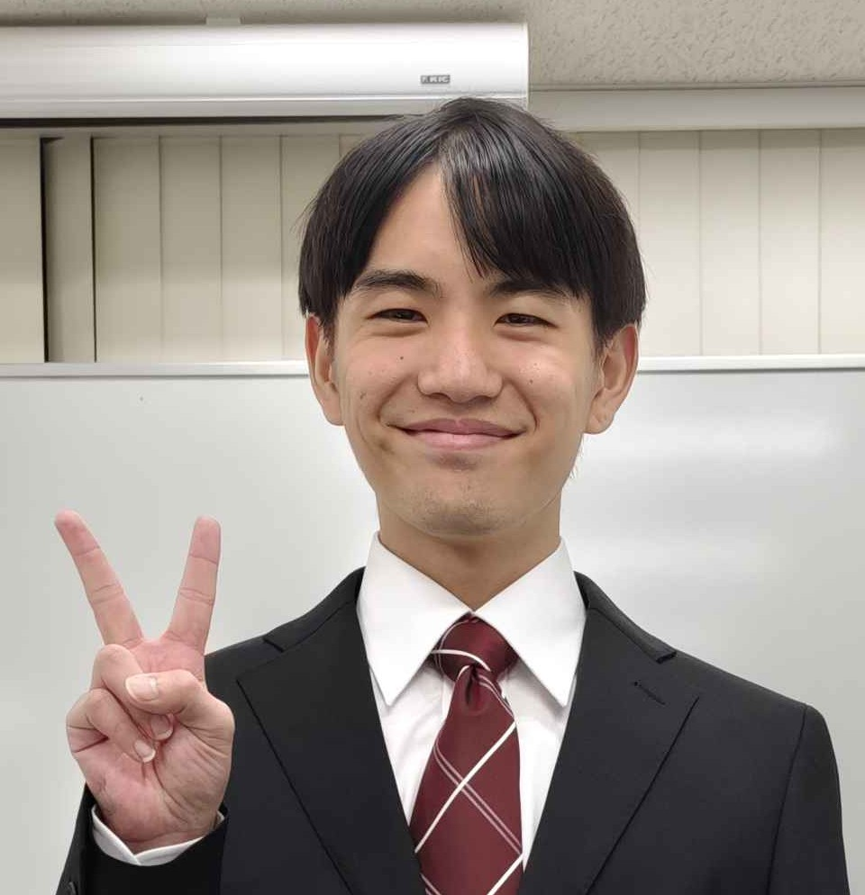

このポートフォリオは現在も編集中のため、不足しているページや説明があります。
就職作品は現在開発中です。実装済みの機能と今後の拡張予定を分けて紹介しています。
PORTFOLIO / SELECTED WORKS
つくったものと、
考えたこと。
西岡慶太郎 ／ サーバーサイドエンジニア志望
C++とGoを用いたオンライン対戦ゲームを個人開発しています。
レートに基づくマッチングや通信処理を通じて、ゲームの面白さをサーバー側から支える技術を学んでいます。
就職作品を見る ↓
01 / FEATURED PROJECT
就職作品
1vs1対戦を支える、マッチングサービス。
 CONCEPT / 作品テーマの概念図 PROJECT 01 ↗
CONCEPT / 作品テーマの概念図 PROJECT 01 ↗
PROJECT 01 / 個人制作・開発中
1vs1対戦ゲームの
マッチングシステム
C++によるゲームクライアントと、Goによるゲームサーバーを組み合わせたオンライン対戦ゲームを開発しています。
レート差に基づくマッチング、対戦用Roomの管理、TCP・UDPを使い分けた通信処理を実装しています。
特にサーバー側の設計に重点を置き、対戦相手の決定からゲーム開始、切断時のRoom解散までの一連の処理を構築しました。
詳しい説明を見る ↗
02 / LANGUAGES & TOOLS
使用言語・ツール
個人制作や授業で使用した技術・ツール。
03 / ABOUT ME
自己紹介

西岡慶太郎 にしおかけいたろう
ECCコンピュータ専門学校でゲームプログラミングを学んでいます。現在はサーバーサイドエンジニアを志望し、C++とGoを用いたオンライン対戦ゲームを個人開発しています。
ゲームの根幹を支えるサーバー技術に魅力を感じ、特にマッチングシステムの設計・実装に力を入れています。実装した機能が想定どおりに動作する達成感を大切にしながら、ネットワークやデータベースなどの知識を深めています。
- 所属
- ECCコンピュータ専門学校 ゲーム開発エキスパートコース 3年
- 卒業予定
- 2028年3月卒業予定
- 希望職種
- サーバーサイドエンジニア志望
- 趣味
- カラオケ、バイク、旅行など